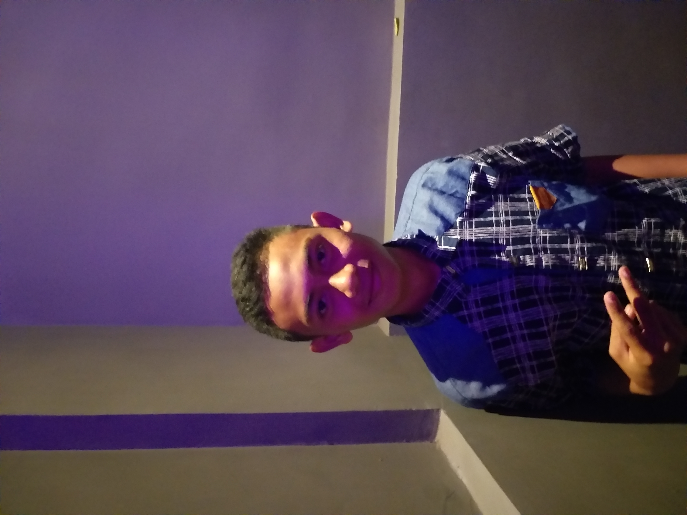

Penentuan 1 Ramadhan 1442 Hijriah | About MeNama saya Resky agus Saya adalah salah satu mahasiswa di Universitas Muhammadiyah makassar lihat Selanjutnya |
|
Artikel Populer |
||
| Mengapa Puasa Di wajibkan ? | ||
| Bulan Ramadhan | ||
| Kota Dengan puasa Terlama |
||
| |
||
3 Kota Yang Menjalankan Puasa Terlama |
|
|
| Durasi berpuasa di Indonesia dalam sehari adalah 14 jam ,Tetapi kamu harus bersyukur, karena banyak umat Muslim di negara negara lain yang harus berpuasa dengan durasi waktu yang lebih panjang loh, apalagi yang harus melaksanakan ibadah puasa di waktu musim dingin! namun ada negara yang berpuasa sampai lewat 20 jam Negara mana sajakah itu ? |
||